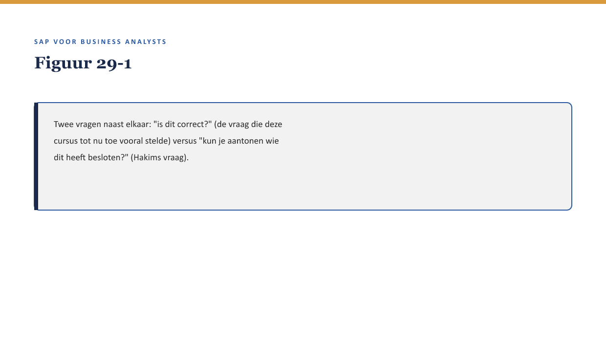
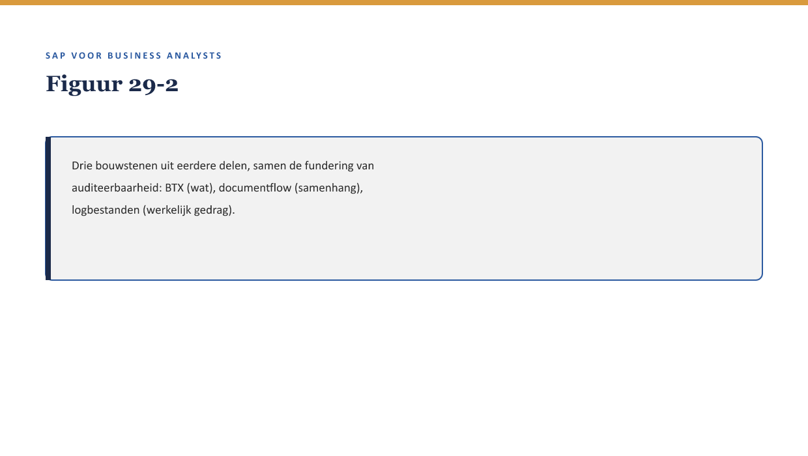

Deel 29 — Governance & auditeerbaarheid
Slidedeck · Niveau 3 Expert · Cursus SAP voor Business Analysts · Ductus
Slidetypen: titleSlide, sectionSlide, bulletsSlide, statementSlide, quoteSlide, tableSlide, figureSlide, opdrachtSlide.
Slide 1 — titleSlide
Governance & auditeerbaarheid Deel 29 · Niveau 3 Expert · Cursus SAP voor Business Analysts
Slide 2 — quoteSlide
“Ik ga niet vragen of deze configuratie correct is. Ik vraag: wie heeft besloten dat hij zo mocht worden ingericht, en kun je me dat aantonen?” — Hakim Osei
Slide 3 — figureSlide

Slide 4 — bulletsSlide
Wat we vandaag doen
- Wie autoriseert een wijziging?
- Drie bekende bouwstenen, nieuw doel: auditeerbaarheid
- Wat een BA zelf vastlegt
- Hakims vraag, vertaald
Slide 5 — quoteSlide
Een technisch perfecte wijziging die zonder de juiste autorisatie is doorgevoerd, is een governance-probleem, ongeacht hoe goed de wijziging zelf is. — Kernzin, reader §3
Slide 6 — figureSlide

Slide 7 — opdrachtSlide
Opdracht 29.2 — Drie bouwstenen koppelen
Drie vragen, drie bouwstenen.
Slide 8 — statementSlide
De historische kortingsregel.
Was dit ooit aantoonbaar besloten?
Slide 9 — opdrachtSlide
Opdracht 29.3 — Hakims vraag beantwoorden
Toegepast op de kortingsregel.
Slide 10 — quoteSlide
Het systeem legt vast wát er is gebeurd. Alleen een mens kan vastleggen waaróm. — Kernzin, reader §5
Slide 11 — bulletsSlide
Samenvatting in vijf zinnen
- Elke wijziging heeft een autorisatiepad — een apart vraagstuk van technische correctheid
- Auditeerbaarheid bouwt op BTX, documentflow, logbestanden
- Een BA legt zelf de beargumentering (“waarom”) vast
- Hakims vraag: is het proces zelf aantoonbaar betrouwbaar?
- Deze vraag draagt de masterproef in deel 30
Slide 12 — titleSlide
Volgende deel Masterproef Deel 30